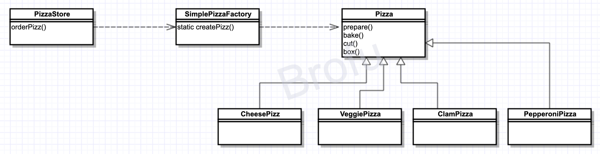

Definition
Simple Factory is actually NOT a pattern, instead, it's more like a kind of programming practice. The client end delegate the work of creating an instance to the instance of factory.
UML Graph

Thinkings
Pizzais designed as Abstract Class or interface- Each
xxxPizzamust extend or implement thePizzaclass or interface. - 在设计模式中，所谓的“实现一个接口”, 并“不一定”表示“写一个类，并利用implement关键词来实现某个java接口”。“实现一个接口”泛指“实现某个超类型（可以是类或者接口）的某个方法”
- If
createPizza()is designed asstatic, then, it cannot be changed byinheritance, and this practice is called Static Factory